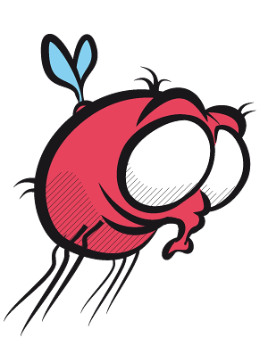
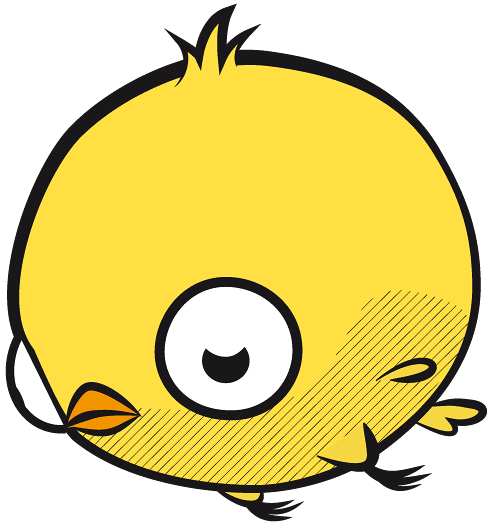

Herbert is a fat mayfly having the worst day of his one-day life. His wife just left him for one of those yellow balloonheads. Fly, shoot and grab the mighty rainbow gun to help him cause as much chaos as possible.